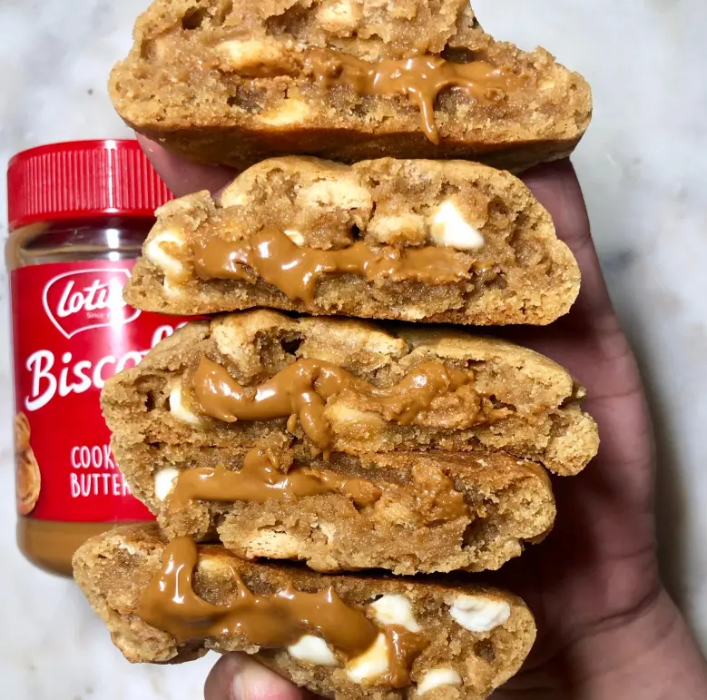

★★★★★
Galetes Farcides de Crema Lotus
Galetes farcides de crema lotus… Algú es pot resistir?
Porcions: 8
Ingredients
- 130 grams de galetes lotus triturades.
- 275 grams de xips de xocolata blanca.
- 300 grams de farina de blat.
- 3 grams de bicarbonat.
- 5 grams de llevadura.
- 150 grams de mantega sense sal.
- 90 grams de sucre blanc.
- 100 grams de sucre moré.
- 2 ous
- 1 pessic de sal
- Crema Lotus
Utensilis
- Forn
- Safata de forn
- 1 bol gran
- 1 bol petit
- Barilles
- Tela
- Nevera
Passos d'elaboració
- Bat la mantega i els dos sucres fins que quedin ben barrejats.
- Bat els ous i afegeix-los a poc a poc.
- Afegeix-hi la resta d'ingredients secs tamisats.
- Barreja fins que tinguis una massa homogènia.
- Afegeix els xips de xocolata i les galetes trossejades.
- Fes boles d'uns 100gr amb la massa en una safata i afegeix-hi una cullerada de crema lotus al centre.
- Cobreix-les amb una tela i fica-les 3 hores a la nevera o 1 hora al congelador perquè endureixin.
- Forneja a 200 graus durant 15 minuts.
@lolalolita (01/04/2025)
Semblen de pastísseria.
@JoanVidal (02/04/2025)
M'ha encantat la recepta. No he tingut cap problema amb els ingredients!
@alexis0k (03/04/2025)
Perfecta per a un berenar amb amics.